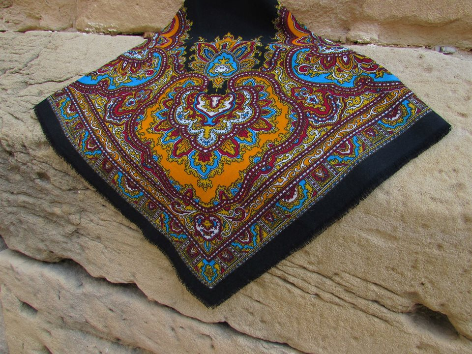
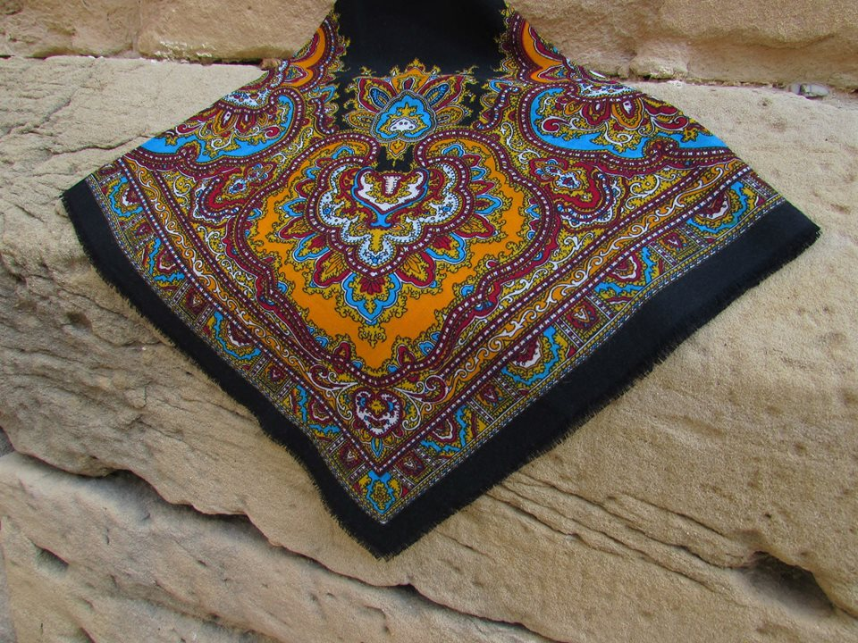
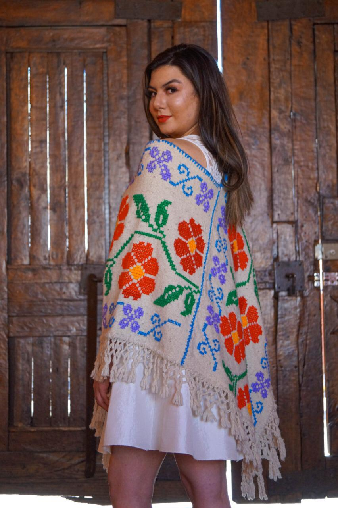
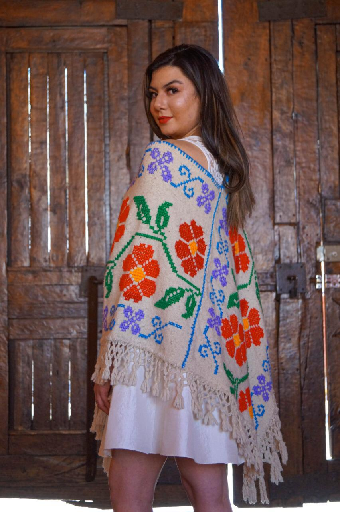

Indumentaria tradicional en lana
Indumentaria
tradicional
"Amigurumis": Consiste en tejer pequeños muñecos en lana,
mediante técnica de croché o ganchillo. Los "amigurumis"
pueden tomar forma de: Frida Kahlo, borreguitos, burritos ,
gatos, jirafas etc.
 

 
